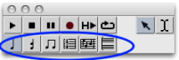
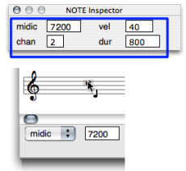
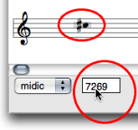

OpenMusic DocumentationHiérarchie de section : OM 6.6 User Manual > Score Objects > Score Editors > Basic Editing
OpenMusic DocumentationHiérarchie de section : OM 6.6 User Manual > Score Objects > Score Editors > Basic Editing
Navigation : page précédente | page suivante
Attention, votre navigateur ne supporte pas le javascript ou celui-ci à été désactivé. Certaines fonctionnalités de ce guide sont restreintes.
Basic Editing
Edition applies to all score objects. The Palette offers a set of edition tools, adapted to each of these objects. The Editor Control is the main edition interface of the editor window. The Score Inspector window also allows a number of editing operations.
Accessing Parameters
Selecting the Right Item : the Palette
The palette displays a player in its upper part, and edition tools in its lower part. To edit an item, select the relevant edition tool. |

|
Inspector Window
A non exhaustive set of parameters can be accessed via the Inspector window . The Inspector window appears once an item is selected, and displays related parametric values. To modify a parameter :
|

Editing the pitch of a note.
|
Editor Control Menu and Frame

|
The editor control allows a thorough edition of each slot, as shown below. It shows one or two menus and an adjacent numeric frame. |
Editor Control : Selecting and Editing Slots
Pitch
There are three ways to change the pitch of a note. In any case, the midic menu item must be previously selected.
|

|
To raise or lower the pitch from the staff, use the ↑ or ↓ keys .
- Add
Cmdto transpose the note from a perfect fifth. - Add
SHIFTto transpose the note from an octave.

|
To change a pitch from the Editor Control Frame, click on the value displayed in the numeric frame and scroll the mouse upwards or downwards.
Double click in the frame and type a value. |
Velocity – Dynamics

|
|
Duration
Choose There are two ways to change the duration of a note :
|

|
MidiChannel

|
The OM midi interface has 16 midi channel.
|
Port
You can access 255 audio ports.
|

|
Références :
Plan :
Navigation : page précédente | page suivante
A propos...(c) Ircam - Centre Pompidou